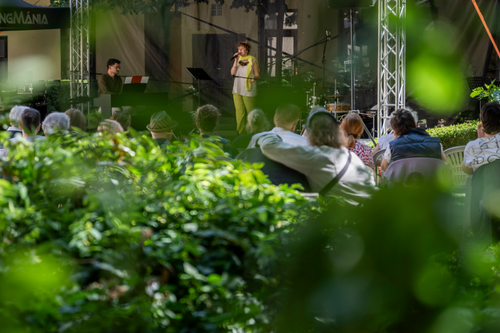
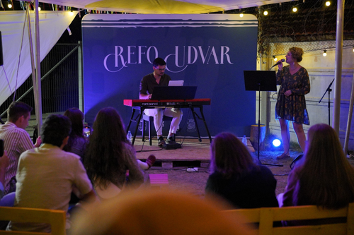

Koncerteink, koncertanyagaink
Jelen pillanatban aktívan zenélünk, fellépünk, amennyiben tehetjük eleget teszünk minden meghívásnak. Alapjáraton három állandó anyagunk van:
Bármilyen felkérésről is legyen szó, a 30 perc a minimum időtartamunk, de különleges vagy rendhagyó alkalmakra is nyitottak vagyunk. Szeretettel fogadjuk a meghívásokat és igyekszünk minden meghívásnak eleget tenni. Aki már hallott minket és velünk dobbant a szíve az meséljen rólunk, aki pedig még nem, azzal türelmetlenül várjuk a találkozást!
Eddigi koncertekről
1 / 6

2 / 6

Újmosnica, Bánsági Magyar Napok
3 / 6

Berekfürdő, Szlovákiai Református Egyház lelkésztovábbképzője
4 / 6

IKE Válts Irányt fesztivál
5 / 6

IKE Válts Irányt fesztivál
6 / 6

Kolozsvári Magyar Napok üì∑ Muresan Bereczki Vilmos Gy√∂rgy